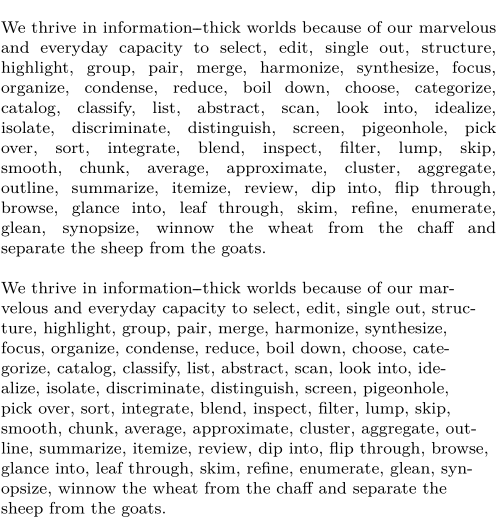

Contents
Summary
The command \setupalign is used to setup the alignment of lines – usually horizontally, in boxes also vertically.
Settings
| \setupalign[...,...] | |
| [...,...] | broad wide bottom height line high low lohi flushright flushleft middle yes no width normal reset inner outer flushinner flushouter left right center disable last end paragraph lefttoright righttoleft l2r r2l table lesshyphenation morehyphenation hanging hangingboth nothanging hz fullhz nohz hyphenated nothyphenated tolerant verytolerant stretch extremestretch final 1*final 2*final 3*final 4*final more 1*more 2*more |
| Option | Explanation |
|---|---|
| broad | Similar to wide, used in tables. |
| wide | Makes flushleft, flushright, and middle lines wider. |
| bottom | Vertical: Ragged-ish bottom (the room for variation is but a single lineheight, of course). |
| height | Vertical: Fill the height: press the last line’s baseline against the lower boundary. |
| line | Vertical: Let the last line’s descenders touch the lower boundary. |
| high | Vertical: Align to top of box. |
| low | Vertical: Align to bottom of box. |
| lohi | Vertical: Vertically center in box. |
| flushright | right-aligned |
| flushleft | left-aligned |
| middle | centered lines |
| yes | justified alignment |
| no | left-aligned |
| width | justified alignment |
| normal | justified alignment |
| reset | equivalent to normal |
| inner | Flush to inner margin. |
| outer | Flush to outer margin. |
| flushinner | Flush to inner margin. |
| flushouter | Flush to outer margin. |
| left | right-aligned (The left is from “ragged-left”. Don’t use it.) |
| right | left-aligned (The right is from “ragged-right”. Don’t use it.) |
| center | equivalent to middle,broad |
| disable | Used only for oneliners. Equivalent to flushleft, but something called \parfillskip is set to zero. |
| last | justified, with last line centered |
| end | justified, with last line right aligned |
| paragraph | justified, with last line force filled/justified(?) |
| lefttoright | Typesetting direction: "Hello, world." |
| righttoleft | Typesetting direction: ".dlrow ,olleH" |
| l2r | Typesetting direction: "Hello, world." |
| r2l | Typesetting direction: ".dlrow ,olleH" |
| table | Equivalent to flushleft,broad,high |
| lesshyphenation | Less hyphenation. Not sure whether this is relative/additive, or absolute. |
| morehyphenation | More hyphenation. Not sure whether this is relative/additive, or absolute. |
| hanging | Enable hanging punctuation (“protrusion”) |
| nothanging | Disable hanging punctuation |
| hz | Enable slight stretching of characters (“font expansion”). Works only with stretch and depends on font settings. |
| fullhz | Enable not only stretching of characters but also additional kerning. Works only with stretch and depends on font settings. |
| nohz | Disable font expansion. |
| hyphenated | Allow hyphenation. |
| nothyphenated | Prevent hyphenation. |
| tolerant | Allow looser final paragraphs (more hyphenations, more stretching) to avoid overfull hboxes. |
| verytolerant | Allow even more loose paragraphs. Mostly necessary in languages with long words like e.g. German. |
| stretch | Allow spaces to be stretched extra far. Can be combined with (very)tolerant, and usually is. Needed for hz to work. |
| extremestretch | Even more flexibility |
| final | something about paragraph filling(?) |
| 1*final | same as final |
| more | adds looseness +1, only useful in boxes, also needs tolerant and stretch |
| 1*more | same as more |
| 2*more | adds looseness +2, only useful in boxes, also needs tolerant and stretch |
Description
There seems to have been an option
tight
: Together with
flushleft
or
flushright
: Try to balance lines, meant for titles.
Examples
Hyphenation options
-
\setuppapersize[A6] \setupalign[nothyphenated,justified,hanging] \setupwhitespace[line] \input tufte \setupalign[hyphenated,morehyphenation,flushleft] \input tufte
- 
Notes
See also
- spac-ali.mkiv
- \startalignment to locally change the alignment
- \setupspacing for setting up the spacing between words
- Text blocks/Typography/Hyphenation for more on hyphenation